【渝传尺素•八】我曾踏月而来，只因你在山中
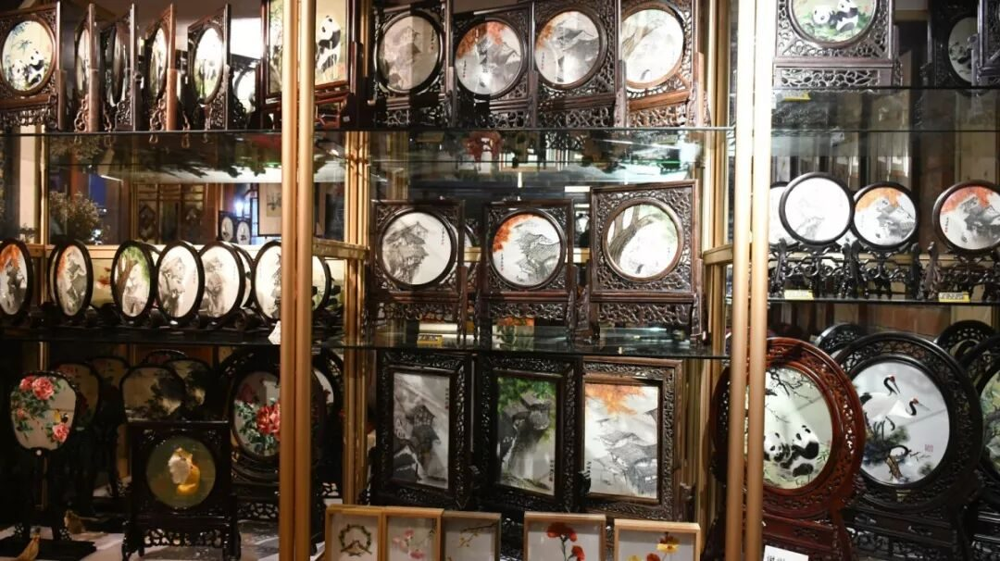
行者
黄玲
行者独步于遥远的旷野，素昧平生的未知，遭遇处处的难题，只因为一个执着的信任，敢于把世界上任何一片土地都放在脚下，为后来人度步出一望无垠的疆土。


偏安一隅太久
会掩盖一个人的想象力
旅途中的未知
才能激发出人的无限可能
带着梦想启程
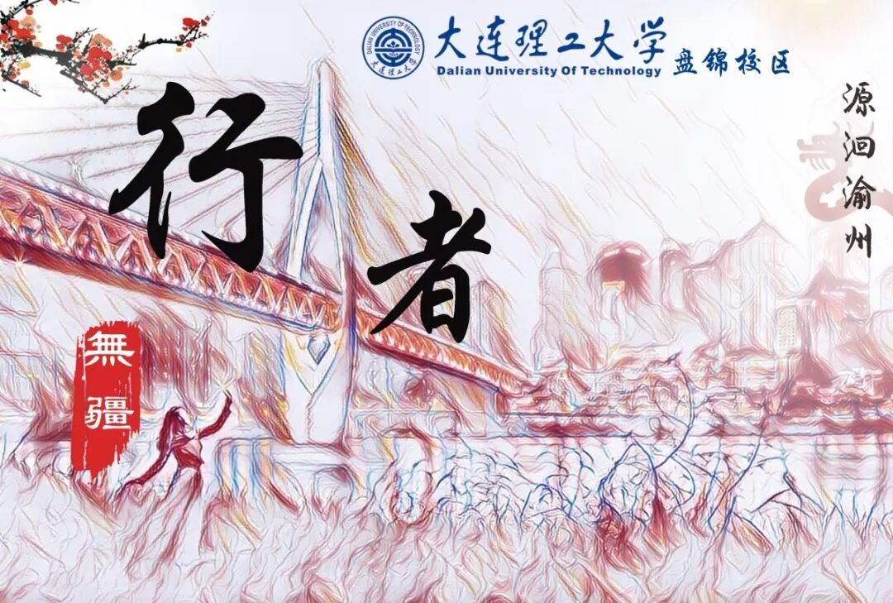
可以毫不夸张地说，行者无疆是我梦想开始的地方。我原以为，所谓文化调研，就是到目的地走马观花地看一看，所谓行者，也只是一个好听的称谓罢了。就连有时候当别人跟我说：“你们文化调研不就是去旅游吗？”我都无法给出有力的反驳，牵强的解释也显得格外苍白无力。但是当我踏上路途，火车在呼啸声中前进，穿过茫茫黑暗，在皎皎月光下，风尘仆仆的行者满心欢喜，而我，有满怀的期冀。
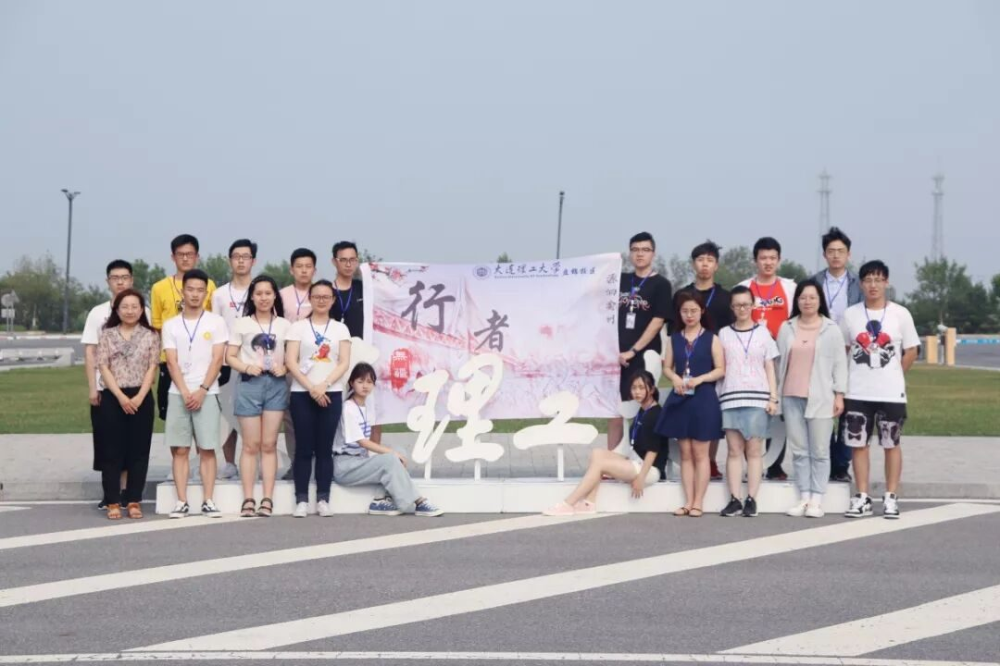
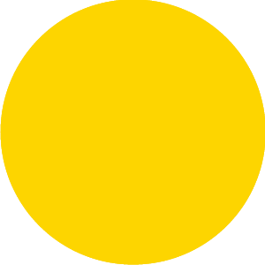
行者无疆，书意人生
人生不是一场物质的盛宴，而是一次灵魂的修炼。“在我看来，文化调研是对文化的调查与思索，对历史的重温与回味。”我在面试的时候如是说，而我也在努力践行着文化调研的初衷。我们曾在高楼大厦中穿梭，也曾在崎岖山路上前行；我们走过熙熙攘攘的古道，也路过三三两两的市井小巷；在古色古香的民俗村里听拔步床诉说当年的繁盛，于红岩魂陈列馆内感叹先烈的铮铮铁骨。
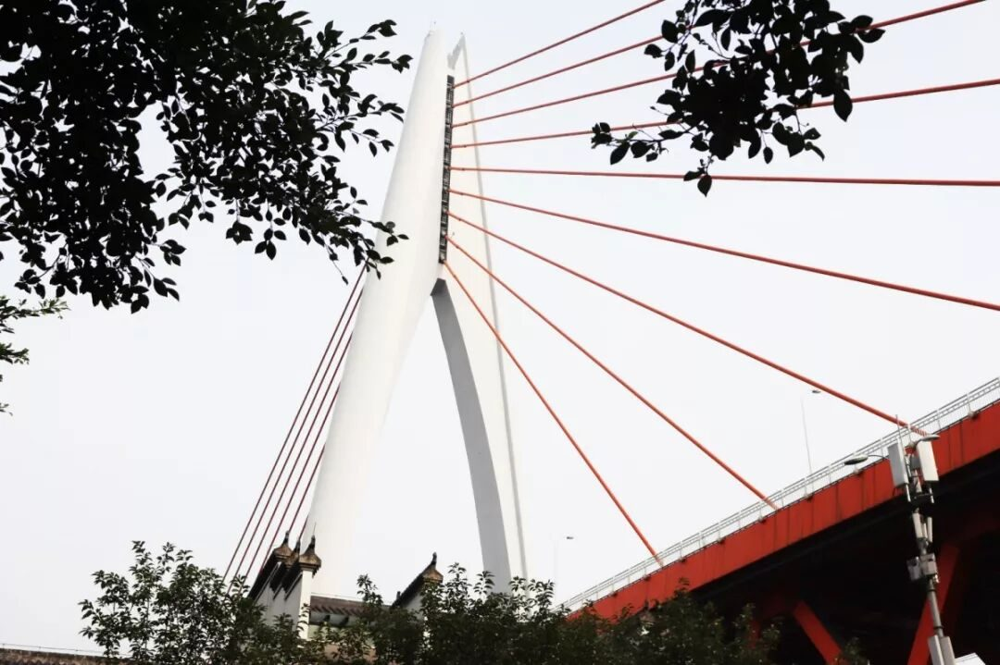
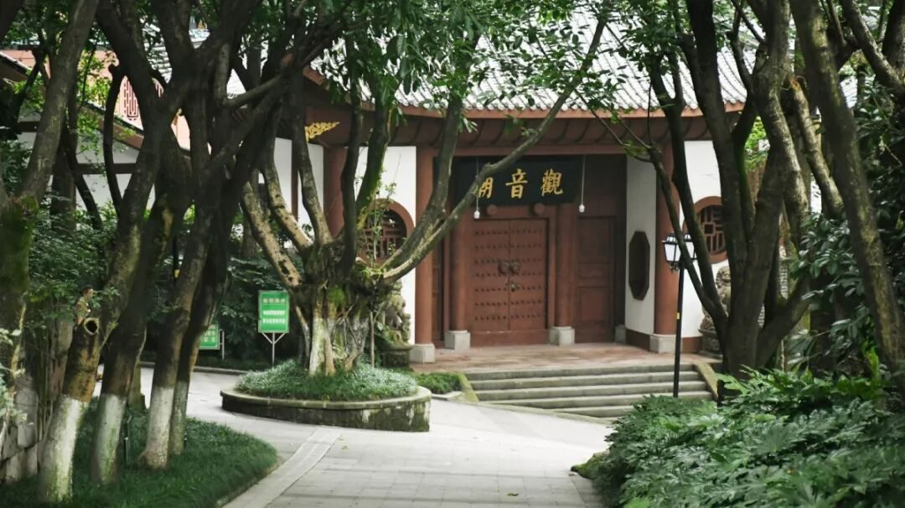
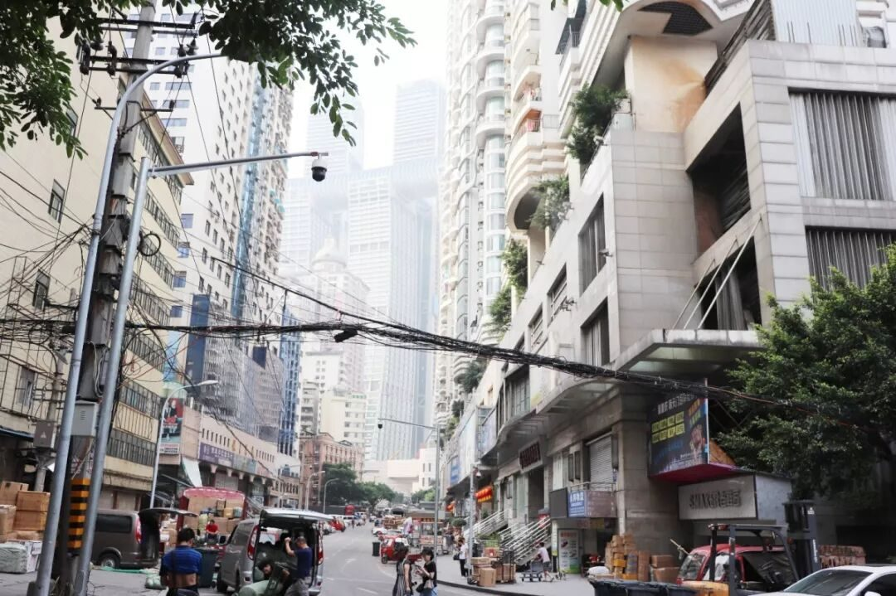
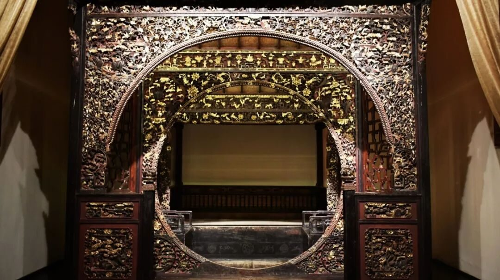
一场戏，一座台，唱尽了天下苍生，却道不尽千年的传统艺术。
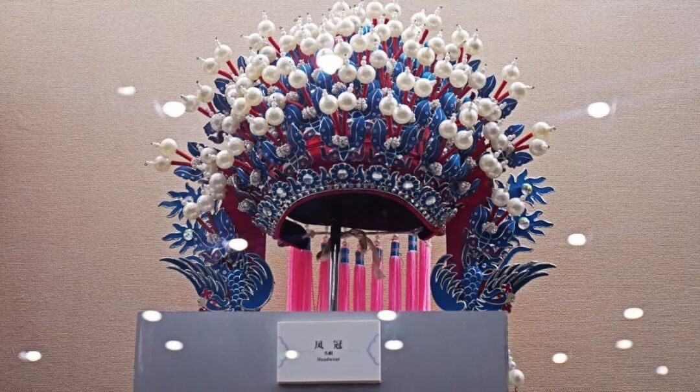
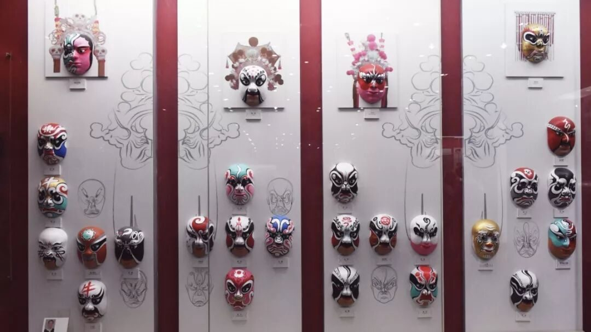
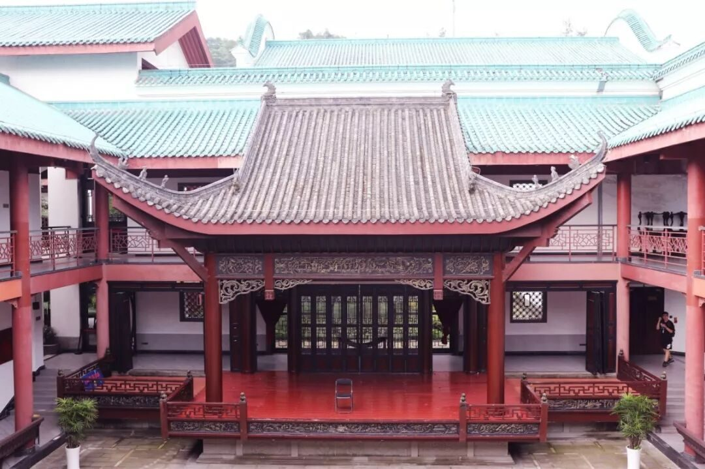
翠竹泣墨痕，锦书画不成。以针作画，以线当墨，一针一线的温柔倾诉，构筑出梦里江山与诗意年华。
“老兵老矣，但他们的手依旧坚硬。”沾满鲜红血迹的手，为我们撑起一片祥和的天。
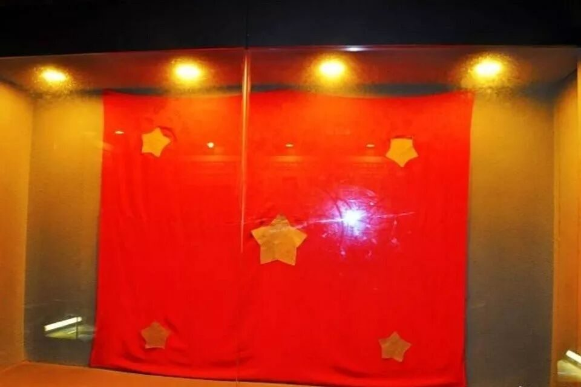
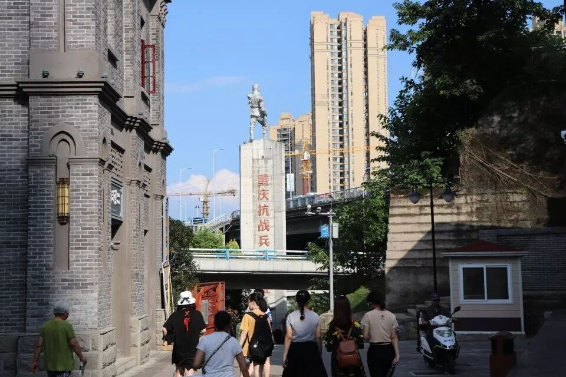
暗无天日的地牢关押不住革命先辈对自由的渴望，血腥残忍的刑具改变不了的高风亮节，可爱的五星红旗是他们对新中国的美好期待。
何其有幸？在这个暑期遇见你
六天的行程，带给我的最大感触是“累”。每天早上八点出发，在早高峰的时间挤地铁，在正午的时候头顶烈日向目的地奔走，日行2w+步，地铁上的空调变成了为我们驱走暑气的最佳工具，拥挤的座位则是我们最佳的休息场所。就连回到青旅之后我们也不轻松。吃完饭就要准备日常会议的分享内容，会议过后，摄影组要忙着整理当天的图片和剪辑采访视频，文字组要忙着记录当天的行程，宣传组要负责排版前一天的推送和发布行者感言的说说，采访组要忙着策划之后的专访和街坊，后勤和财务要忙着规划后续路线和记录当天的开支，调研组要忙着商讨调研问卷的内容和调研报告的撰写，外联组要忙着联系调研对象……队长呢，嗯，他也有自己的事。
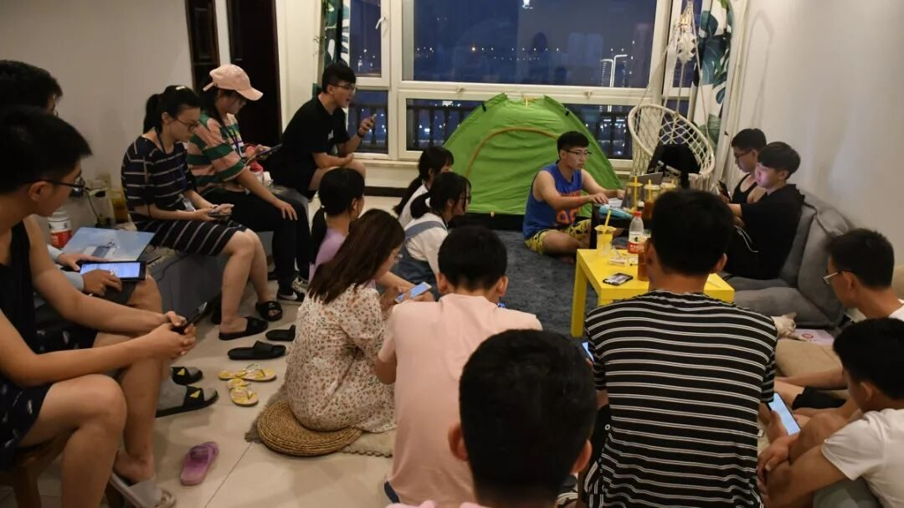
如果你问我：“文化调研是不是出去旅游？” 我现在可以斩钉截铁地告诉你，完全不是。
至此，行者无疆·源洄渝州告一段落，但文化调研的脚步从未停歇。
请继续
保持这一份热爱，
奔赴下一场山海。
远方诗与否，
且看来路行。
来源丨行者无疆实践团
文字丨黄玲
排版丨陈嘉颖
审核丨邓子孚 段智然
视频丨陈辉
行者无疆实践团
QQ：2758025831

随行者一起认识世界
长按二维码